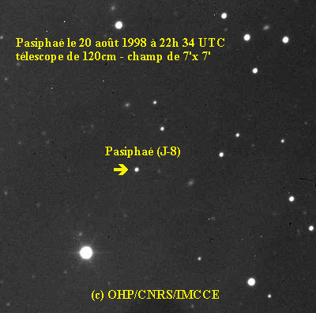
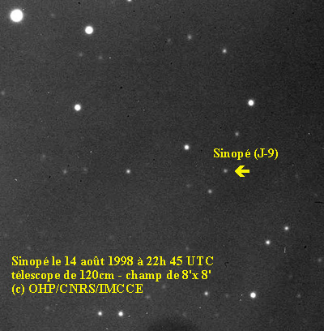
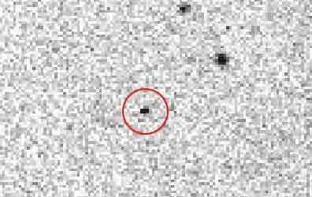

Пасифе (др.-греч. Πασιφάη) — спутник Юпитера. Открыт 27 января 1908 года британским астрономом Филибером Жаком Мелоттом в Гринвичской королевской обсерватории. Первоначальное обозначение — 1908 CJ или VIII. Своё название получил в 1975 году по имени Пасифаи — жены критского царя Миноса, матери Минотавра. В период с 1955 по 1975 год его иногда называли «Посейдоном».
Орбита Пасифе имеет очень большой эксцентриситет, а также сильно наклонена к плоскостям эклиптики и вращения Юпитера. Спутник обращается в обратном направлении — то есть в противоположном направлению вращения Юпитера. Принадлежит к группе Пасифе — группе спутников, имеющие орбиты с близкими параметрами. По своим размерам он является крупнейшим спутником с обратным направлением и одним из крупнейших нерегулярных спутников.

Синопе (др.-греч. Σινώπη) — нерегулярный естественный спутник Юпитера с ретроградным движением. Открыт в июле 1914 года американским астрономом Сетом Барнсом Николсоном в Ликской обсерватории. Назван в честь нимфы Синопы из древнегреческой мифологии.
Спутник получил имя в 1975 году, до этого использовалось лишь обозначение Юпитер IX. В период с 1955 до 1975 года спутник иногда называли «Гадес».
Синопе была самым внешним из известных спутников Юпитера до открытия в 1999 и 2000 годах 12 спутников планеты, два из которых могут удаляться от Юпитера дальше Синопе.

Каллирое (от др.-греч. Καλλιρρόη) — один из естественных спутников Юпитера, известный также как Юпитер XVII.
Каллирое была открыта 6 октября 1999 года астрономами Тимоти Спаром, Джеймсом Скотти, Робертом Макмилланом, Джеффом Ларсеном, Джо Монтани, Арианной Глисон и Томом Герельсом в рамках программы Spacewatch. Первоначально небесное тело приняли за астероид (1999 UX18). 18 июля 2000 года Тимоти Спар установил, что речь идёт о новом спутнике Юпитера, который затем получил временное обозначение S/1999 J 1. Спутник получил название Каллирое в честь наяды Каллирои, матери Ганимеда из древнегреческой мифологии.
Средний диаметр Каллирое — около 7 км. Плотность очень грубо оценивается в 2,6 г/см³, так как спутник состоит предположительно из преимущественно силикатных пород. Поверхность очень тёмная: её альбедо — 0,04. Звёздная величина равна 20,8m.
Аойде (др.-греч. Ἀοιδή) — нерегулярный спутник планеты Юпитер с обратным орбитальным обращением. Названа именем Аэды, одной из муз в древнегреческой мифологии. Также обозначается как Юпитер XLI.
Аойде была открыта группой учёных Гавайского университета под руководством Скотта Шеппарда в серии наблюдений, начиная с 8 февраля 2003 года. Сообщение об открытии сделано 4 марта 2003 года. Спутник получил временное обозначение S/2003 J 7. Собственное название было присвоено 30 марта 2005 года.